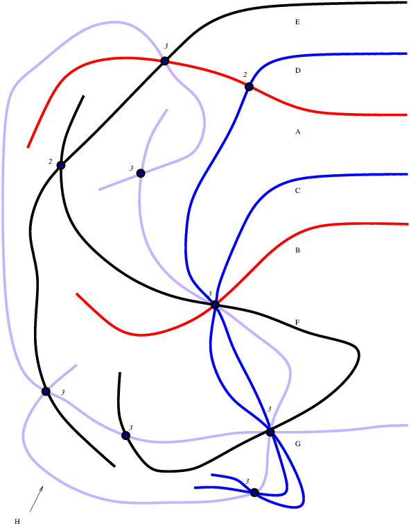
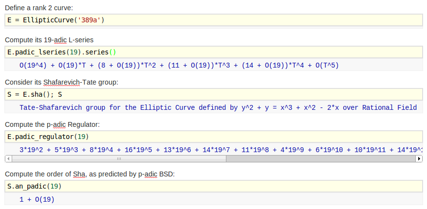

$p$-adic BSD for GL2-type Abelian Varieties
William Stein (joint work with J. Balakrishnan and S. Müller)
Notes for a talk at the AMS Special Session on
$L$-functions and Arithmetic Geometry, II, San Diego, 2013.
(Change slides with left and right arrows. Type "m" to see all slides.)
$a_p(E) = p+1-\#E(\mathbf{F}_p)$
$\text{Sha}(E) = \text{ker}(H^1(\mathbf{Q},E) \to \oplus_v H^1(\mathbf{Q}_v,E))$
$c_p = \#\Phi_{E,p}(\mathbf{F}_p)$
BSD for elliptic curves $E$ over $\mathbf{Q}$
L(E,s) = \prod_{p\nmid N}\frac{1}{1-a_p p^{-s} + p^{1-2s}} \cdot \prod_{p\mid N}\frac{1}{1-a_p p^{-s}}
Conjecture (Birch and Swinnerton-Dyer):
- (r) $\text{ord}_{s=1} L(E,s) = \text{ rank } E \quad (=r) $
- (f) $ \frac{L^{(r)}(E,1)}{r!} = \frac{\text{Reg}_E \cdot \Omega_E \cdot \#\text{Sha}(E) \cdot \prod c_p}{\# E(\mathbf{Q})_{\text{tor}}^2} $
Theorem (Kolyvagin, Wiles, Gross-Zagier, ...):
- $\text{ord}_{s=1} L(E,s)\leq 1$ implies (r) true; moreover, (f) can be decided in any particular case and is true when $N\leq 5000$
- $\text{ord}_{s=1} L(E,s)\leq 3$ implies (r) can be decided by computer in any particular case; however, (f) is not known in even a single case (!)
- $\text{ord}_{s=1} L(E,s)\geq 4$ implies nothing; in fact, (r) is not known in a single case (!)
Modularity Theorem: Abelian variety of $\text{GL}_2$-type if and only if isog to product of $A_f$.
$S_2(\Gamma_0(N)) = \{ f:\mathfrak{h} \to \mathbf{C} \text{ with } f(\frac{az+b}{cz+d}) = (cz+d)^k f(z) ....\}$
BSD for GL2-type Abelian Varieties
newform $f = \sum a_n q^n \in S_2(\Gamma_0(N))$
$L(f,s) = \sum a_n n^{-s}$
$L(A_f,s) = \prod L(f^{\sigma},s)$
$A_f = J_0(N) / \text{Ann}_{\mathbf{T}}(f) J_0(N)$
abelian variety of dim $[\mathbf{Q}(\ldots a_n\ldots):\mathbf{Q}]$
My Ph.D.: compute these invariants

Conjecture (Birch and Swinnerton-Dyer):
- (r) $\text{ord}_{s=1} L(A_f,s) = \text{ rank } A_f \quad (=r) $
- (f)
$\displaystyle \frac{L^{(r)}(A_f,1)}{r!} = \frac{\text{Reg}_{A_f} \cdot \Omega_{A_f} \cdot \#\text{Sha}(A_f)\cdot \prod c_p}{\# A_f(\mathbf{Q})_{\text{tor}}\cdot \# A_f^{\vee}(\mathbf{Q})_{\text{tor}}} $
Theorem (Kolyvagin, Wiles, Gross-Zagier, ...):
- $\text{ord}_{s=1} L(f,s)\leq 1$ implies (r); (f) in principle but not practice
- $\text{ord}_{s=1} L(f,s)\leq 3$ implies (r) can be decided by computer in principle, not practice (in general)
$p$-adic BSD for elliptic curves $E$ over $\mathbf{Q}$
- interpolates special values $L(E,\chi,1)/\Omega_{E,\chi}$
- compute using classical or overconvergent modular symbols
- more general: $p=2$, supersingular, multiplicative (but not additive...)
$p$ good ordinary (odd) prime
\mathcal{L}_p(E,T) = \text{$p$-adic $L$-series} \in \mathbf{Q}_p[[T]]
Conjecture (Mazur, Tate, Teitelbaum):
- (r) $\text{ord}_{T} \mathcal{L}_p(E,T) = \text{rank } E(\mathbf{Q}) (=r)$
- (f) $\frac{\mathcal{L}^{(r)}(E,0)}{r!} = \frac{\text{Reg}_p(E) \cdot \#\text{Sha}(E) \cdot \prod_{\ell\mid N} c_\ell}{\# E(\mathbf{Q})_{\text{tor}}^2} \cdot$ $\epsilon_p \cdot \log_p(1+p)^{-r}$
- $\alpha$ unit root of $x^2-a_p(E)x + p$
- $\epsilon_p = (1-\alpha^{-1})^2$
The hypothesis that $\text{Reg}_p(E)\neq 0$ is serious;
easy to check
in practice if $E(\mathbf{Q})$ is known.
Theorem (Kato, Schneider, Iwasawa, ...):
- rank $E \leq \text{ord}_{T} \mathcal{L}_p(E,T)$,
- if $\text{Reg}_p(E)\neq 0$, rank true, and Galois image big, then actual $\#\text{Sha}(E)$ divides conj at $p$
$p$-adic BSD for the rank 2 curve 389a

Theorem (—, Wuthrich) For good ordinary
$p<$48,859, except $p=$16,231, we have $\text{Sha}[p]=0$.
\frac{\mathcal{L}^{(r)}(E,0)}{r!} = \frac{\text{Reg}_p(E) \cdot \#\text{Sha}(E) \cdot \prod_{\ell\mid N} c_\ell}{\# E(\mathbf{Q})_{\text{tor}}^2} \cdot \epsilon_p
Computational application of $p$-adic BSD
Theorem (—, Wuthrich)
Let $X$ be the set of 1,534,422 pairs $(E,p)$, where $E$ is a non-CM elliptic curve
over $\mathbf{Q}$ with rank at least 2 and conductor 30,000, and $p\geq 5$ is a good ordinary
prime for $E$ with $p < 1000$ such that the mod $p$ representation is surjective.
Then $\text{Sha}(E/\mathbf{Q})[p] = 0$ for each of the pairs in $X$, as predicted by BSD.
Proof uses:
- Deep theory of many people such as Kato, Iwasawa, Perrin-Riou
- Work of —, Mazur, Tate, Harvey, ... on fast computation of $p$-adic heights
- A very fast implementation by — of computing $p$-adic $L$-series to low precision
- Letting computers run for a long time.
For elliptic curves: $\frac{\mathcal{L}^{(r)}(E,0)}{r!} = \frac{\text{Reg}_p(E) \cdot \#\text{Sha}(E) \cdot \prod_{\ell\mid N} c_\ell}{\# E(\mathbf{Q})_{\text{tor}}^2} \cdot$ $\epsilon_p \cdot \log_p(1+p)^{-r}$
$f=\sum a_n q^n$ is a newform in $S_2(\Gamma_0(N))$
$p$-adic BSD for $A_f$
The Main Issue — what is $ \mathcal{L}_p(A_f, T) = \prod \mathcal{L}_p(f^{\sigma},T) $?
-
Defining $\mathcal{L}_p(f^\sigma,T)$ tricky; harder than in the elliptic curve case to choose a period.
- Requires choosing a (Shimura) period for each $f^{\sigma}$, that is, a complex number $\Omega^+_{f^{\sigma}}$
such that $L(f^{\sigma},1)/\Omega_{f^{\sigma}}$ is algebraic (and for twists). Individual $\Omega_{f^{\sigma}}$ are not canonical! But who cares...
- Theorem (—) Can choose $\Omega_{f^{\sigma}}$ such that $\prod \Omega_{f^{\sigma}} = \Omega_{A_f}$, which is canonical (the Neron period)
$[\;]^+_{f}: \mathbf{Q} \rightarrow K_f;\quad r \mapsto [r]^+_{f} = -\frac{\pi i}{\Omega^+_{f}}\left(\int_r^{i\infty} {f}(z) dz + \int_{-r}^{i \infty} {f}(z) dz \right)$ (modular symbol map)
$\mu^{+}_{{f},\alpha}(a + p^n \mathbf{Z}_p) = \frac{1}{\alpha^n}\left[\frac{a}{p^n}\right]^+_{f} - \frac{1}{\alpha^{n+1}}\left[\frac{a}{p^{n-1}}\right]^+_{f} \qquad$ ($\alpha$ a unit root of $x^2-a_p(f)x+p$)
$P_n(f,T) = \sum_{a=1}^{p-1} \left( \sum_{j=0}^{p^{n-1}-1}
\mu^+_{f,\alpha} \left(\omega(a)(1+p)^j + p^n\mathbf{Z}_p\right) \cdot (1+T)^j \right) \to \mathcal{L}_p(f,T)$
$[\;]^+_{f}: \mathbf{Q} \rightarrow K_f;\quad r \mapsto [r]^+_{f} = -\frac{\pi i}{\Omega^+_{f}}\left(\int_r^{i\infty} {f}(z) dz + \int_{-r}^{i \infty} {f}(z) dz \right)$ (modular symbol map)
$\mu^{+}_{{f},\alpha}(a + p^n \mathbf{Z}_p) = \frac{1}{\alpha^n}\left[\frac{a}{p^n}\right]^+_{f} - \frac{1}{\alpha^{n+1}}\left[\frac{a}{p^{n-1}}\right]^+_{f} \qquad$ ($\alpha$ a unit root of $x^2-a_p(f)x+p$)
$P_n(f,T) = \sum_{a=1}^{p-1} \left( \sum_{j=0}^{p^{n-1}-1}
\mu^+_{f,\alpha} \left(\omega(a)(1+p)^j + p^n\mathbf{Z}_p\right) \cdot (1+T)^j \right) \to \mathcal{L}_p(f,T)$
$p$-adic BSD for $A_f$
Conjecture (Balakrishnan, Müller, —):
- (r) $\text{ord}_{T} \mathcal{L}_p(A_f,T) = \text{rank } A_f(\mathbf{Q}) (=r)$
- (f) $\frac{\mathcal{L}^{(r)}(A_f,0)}{r!} = \frac{\text{Reg}_p(A_f) \cdot \#\text{Sha}(A_f) \cdot \prod_{\ell\mid N} c_\ell}{\# A_f(\mathbf{Q})_{\text{tor}} \cdot \#A_f^{\vee}(\mathbf{Q})_{\text{tor}} } \cdot$ $\epsilon_p \cdot \log_p(1+p)^{-r}$
Computing $p$-adic regulator quite involved: it involves intersection theory (Müller's thesis), normalized differentials and Coleman integration (Balakrishnan, Besser).
Numerical Evidence:
16 $A_f=\text{Jac}(C)$ of rank 2 and dim 2 from Empirical evidence for the Birch and Swinnerton-Dyer
conjectures for modular Jacobians of genus 2 curves. Assume Sha($A_f$) is 2-torsion.
Theorem: The above conjecture is true to at least 4 $p$-adic digits for each $5 < p < 100$ such that $C$ has an odd degree model over $\mathbf{Q}_p$.
| N | Equation of $C_N$ |
|---|
| 67 | $y^2 + (x^3+x+1)y = x^5-x$ |
| 73 | $y^2 + (x^3 + x^2 + 1)y = -x^5 - 2x^3 + x$ |
| 85 | $y^2 + (x^3+x^2+x)y = x^4 + x^3 + 3x^2-2x+1$ |
| 93 | $y^2 + (x^3 +x^2 + 1)y = -2x^5 + x^4 + x^3$ |
| 103 | $y^2 + (x^3 + x^2 + 1)y = x^5 +x^4$ |
| 107 | $y^2 + (x^3 + x^2 + 1)y = x^4 - x^2 - x - 1$ |
| 115 | $y^2 + (x^3 + x^2 + 1)y = 2x^3 + x^2 + x$ |
| 125 | $y^2 + (x^3 + x + 1)y = x^5 + 2x^4 + 2x^3 +x^2 - x -1$ |
| 133 | $y^2 + (x^3 + x^2 + 1)y = -x^5 + x^4 -2x^3 +2x^2-2x$ |
| 147 | $y^2 + (x^3 + x^2 + x)y = x^5 + 2x^4 + x^3 + x^2 + 1$ |
| 161 | $y^2 + (x^3 + x + 1)y = x^3 + 4x^2 + 4x + 1$ |
| 165 | $y^2 + (x^3 + x^2 + x)y = x^5 + 2x^4 + 3x^3 + x^2-3x$ |
| 167 | $y^2 + (x^3 + x + 1)y = - x^5 - x^3 - x^2 -1$ |
| 177 | $y^2 + (x^3 + x^2+1)y = x^5 + x^4 + x^3$ |
| 188 | $y^2 = x^5 - x^4 + x^3 + x^2 - 2x+1$ |
| 191 | $y^2 +(x^3 + x+ 1)y = -x^3 + x^2 +x$ |

Numerical Evidence

Ideas for future work
- Verify that Sha(389a)[16,231]=0 (overconvergent modular symbols).
- Generalize elliptic curve computations to supersingular primes; basic theory and implementations in place, but algorithms and code are way too slow.
- Compute Heegner points and show that Sha($A_f$)=0 for some abelian varieties $A_f$ with $\text{ord } L(f,s)\leq 1$.
- Extend [—-Wuthrich] to $A_f$, and show that Sha($A_f$)[$p$]=0 for many $p$.
- Generalize conjectures and data to quotients of $J_1(N)$.
- Most importantly, make computation of $p$-adic heights on $A_f=\text{Jac}(C)$ not depend on Magma.